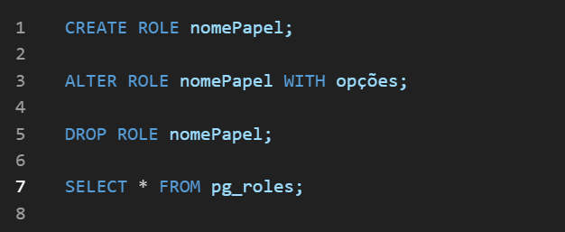
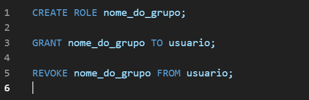

Banco de Dados
Professor Responsavel:
Alexandre Aparecido Bernardes
Nesta disciplinas aprimoramos nossos conhecimentosem BD com gestões avançadas, tanto relacional e não relacional. Esta disciplina envolve a aplicação de técnicas complexas para o desenvolvimento e otimização de sistemas de armazenamento de dados eficientes e escaláveis. Inclui o estudo de estratégias como modelagem de dados relacional e NoSQL, clustering, replicação e sharding. Foca na integração de dados de diversas fontes e na garantia da consistência, disponibilidade e confiabilidade dos dados. Além disso, aborda práticas de segurança, como criptografia e controle de acesso, e considera aspectos de desempenho, como indexação e otimização de consultas.
- Controle de acesso (DLC)
- Orimização com Procedure/Functions
- Postgress especifico
- Gerenciamento de usúarios, grupos e permissões
- Comando GRANT e REVOKE
- Encapsulamento de lógica SQL
- Melhoria de desempenho e segurança
- Papéis (Roles) e herança de privilegios
- Suporte a multiplas linguagens e suporte
Controle de acesso (DLC)
Um papel (role) no PostgreSQL é uma entidade usada para gerenciar permissões, acessos e privilégios em bancos de dados. Esses papéis podem representar usuários (com login), grupos (sem login), ou ambos.
Criação de papeis
Com o papel criado, podem se usar varios comandos de acesso como:
Nesta imagem temos exemplos de alterar as permissões de uma role, sendo eles de permitir ou impedir login, definir super usuario, permitir ou impedir a criação de BD, definir a senha, definir o tempo da conta, limitar o numero de conexões.
Comando Basicos
Comandos de ações
Comandos basicos para listar, alterar e criar/apagar alguma ROLE
Grupos de Papéis
Papéis tambem podem funionar como grupos para facilitar o gerenciamento de permissões em conjunto
privilégios
para conceder ou revogar permissões sobre objetos do banco (como tableas ou funções):
privilegios mais comuns:
- SELECT
- INSERT
- UPDATE
- DELETE
Orimização com Procedure/Functions
Stored Procedures e Functions são blocos de código SQL armazenados no servidor do PostgreSQL. Elas são usadas para:
- Melhor desempenho
- Reultilizar código
- Proteger a logica do sistema
FUNCTION: Retorna um valor. Pode ser usada em consultas SQL, como em SELECT minha_funcao()
PROCEDURE: Não retorna valor diretamente. É chamada com o comando CALL. Indicada para tarefas que não precisam retornar dados.
Tipos de funções
- SQL
- Usam apenas comandos SQL simples.
- Sem estruturas de controle como IF, LOOP, etc.
- PL/pgSQL
- Linguagem nativa do PostgreSQL.
- Suporta variáveis, condições, laços de repetição, etc.
- Linguagens externas
- É possível criar funções usando linguagens como Python, C, entre outras.
- Útil para tarefas mais avançadas ou específicas.